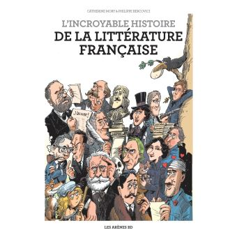

Riccardo
Homework: Create your first HTML page
If truth be told, my first HTML page dates back to 2009. What happened is: I found a website with interesting information, but a few annoying grammar mistakes. I saved the page on my computer (Ctrl + S on Firefox), and I fixed the mistakes.
In the 11 years since then, I learned HTML simply by retro-enginnering webpages. Up to date, I always used the simple Notepad to write and/or edit HTML files.
Looking forward for CCS and JavaScript :)
Personal information
- E-mail: Riccardo.________@yahoo.it
- Phone: +xx-06-36-81-xx-xx
- Social networks: Facebook, LinkedIn, Kaggle.
- Wikis: Strategywiki (administrator), Wikipedia, Fandom (contributor)
What I like
- Dark mode: looking into a mostly white screen all day long is the same as looking straight into a light bulb. I protect my eyes with dark mode.
- Keyboard shortcuts: I used to say to my students in high school: "The mouse is for the cats, professionals use keyboard shortcuts".
- Mozilla Firefox: whenever I save a webpage, Firefox saves the editable HTML in a file and all the images in a folder. I find this extremely nice for two reasons: if I want to edit the page (with the humble Notepad) and if I want to save all the images in the blink of an eye. I dislike Google Chrome for many reasons (unless it was updated recently): if I save a webpage, Chrome creates a single HTML file and I am unable to separate the images; some useful keyboard shortcuts do not work on Chrome; if installed on a computer, Chrome keeps forcing itself to become the default browser; Chrome makes me feel tracked (I have nothing to hide, but I value my privacy).
- Very old role-playing video games: at least 18 years old. I am administrator on StrategyWiki.
- Books: oh, the pleasure of the languages! Oh, the nice smell of paper!
- Snowboarding: a good reason to do sport once a year and nothing more :P
 |
 |
I like old role-playing video games.
This one is from 1986. |
I love reading books.
Recently, I really enjoyed this one. |